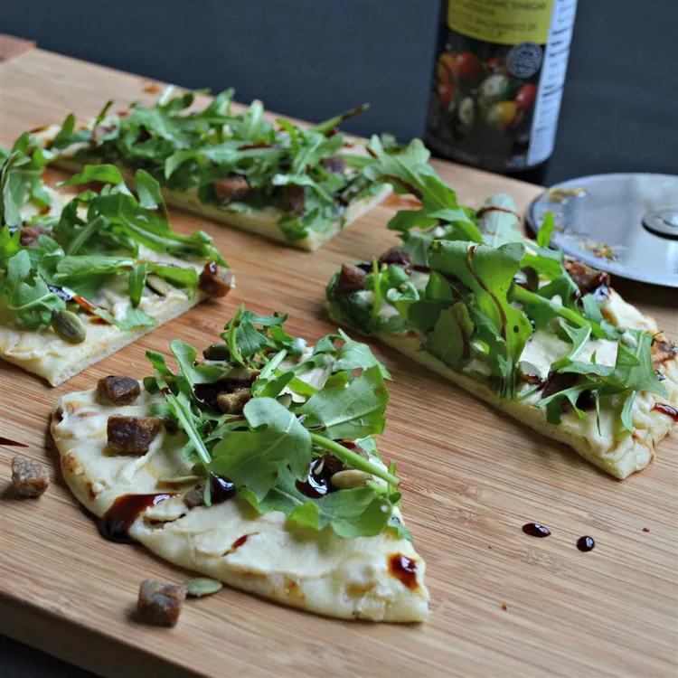

Arugula and Hummus Mini Pizzas

Description
A nice quick and fresh snack that is healthy and delicious!
This can also be made on pita bread instead of naan.
Ingredients
- 2 tablespoons hummus, or to taste
- 1 naan bread
- 1 cup arugula, or to taste
- 1 date, pitted and finely chopped
- 2 teaspoons pumpkin seeds
- 1 teaspoon balsamic vinegar, or to taste
Steps
- Spread hummus onto naan bread; top with arugula, date, and pumpkin seeds.
- Drizzle balsamic vinegar over pizza.